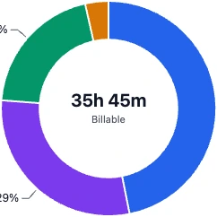

Private by design
No account, no telemetry and no network calls from the app.
A free Windows time tracker for freelancers and anyone who bills by the hour. Start a timer on a task, and it records exact start and end times. No account and no telemetry.
Free, with no in-app purchases. Windows 10 version 2004 or later, and Windows 11 (x64). Read the notices before you install.
New in 1.3.2: saving is about 3 to 5 times faster, and a sync with your cloud folder takes a third to half less time.

Set it up, create a project and a task, and press Start. The how-to walks through it, then billing, analysis and your data.
The timeline shows each day at a glance, and Analysis compares periods with metrics such as total time, focus ratio, weekly targets, earnings and time per project.

Project breakdowns show each project's share of your time, how projects rank against the previous period, and how they trend across the days.

Set a price per hour or a fixed fee, apply rounding rules, mark billable pauses, and create billing summaries that track what has and hasn't been billed. Export timesheets to PDF, and your data to Excel and CSV.

No account, no telemetry and no network calls from the app.
It uses your own OneDrive or Google Drive folder rather than a company's server.
Every change is written to the history, so a figure can be explained later.
You always see what really happened and what you can bill.
A billable pause and rounding count in Billable only. Illustration, not to scale.
Times are stored in UTC and shown in your zone, your client's zone or any other, including across daylight saving changes.
One moment in three zones. An illustration, not the current time.
Please read before you install
Windows removes this app's local data on uninstall. Connect a OneDrive or Google Drive folder to keep a permanent copy.
The app is built for one person on one device at a time. Sync carries your work between devices, but doesn't make it safe to edit on two at once.
Files in your sync folder hold your full labor data, including prices. They are protected only by your OneDrive or Google Drive account.
Billing summaries and figures are for guidance only, and aren't invoices, accounting or tax advice. Check them before you bill a client.
Cloud sync needs the provider's app. OneDrive or Google Drive desktop must be installed and signed in. Those services have their own terms and are not part of this app.
WebView2. The app needs the Microsoft Edge WebView2 Runtime. Windows 11 includes it, and some Windows 10 PCs may need to install it.
Email pmrj@rustcircle.com with a question or a problem. You can also open an issue on GitHub. Issues are public, so leave out client names and prices.